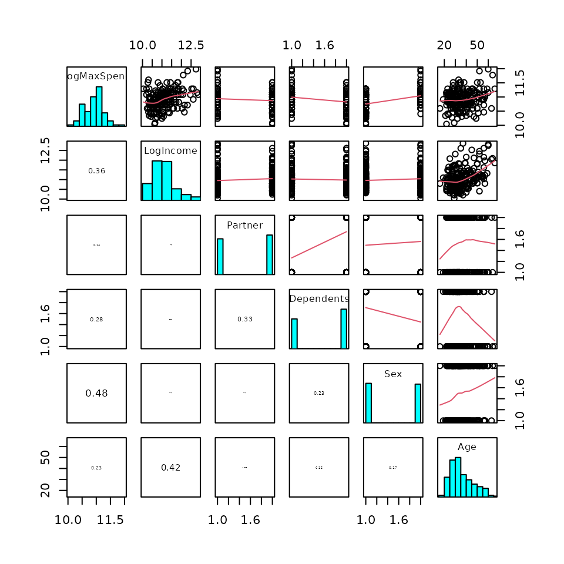
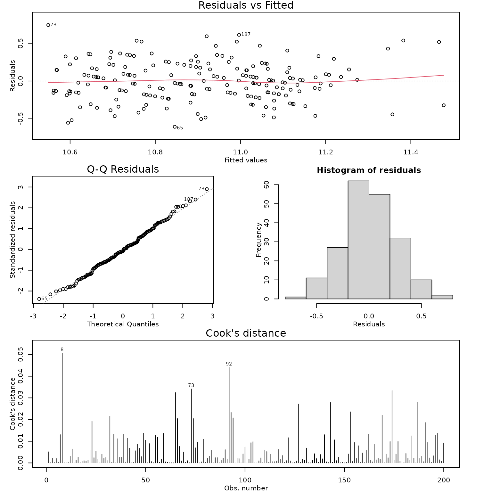
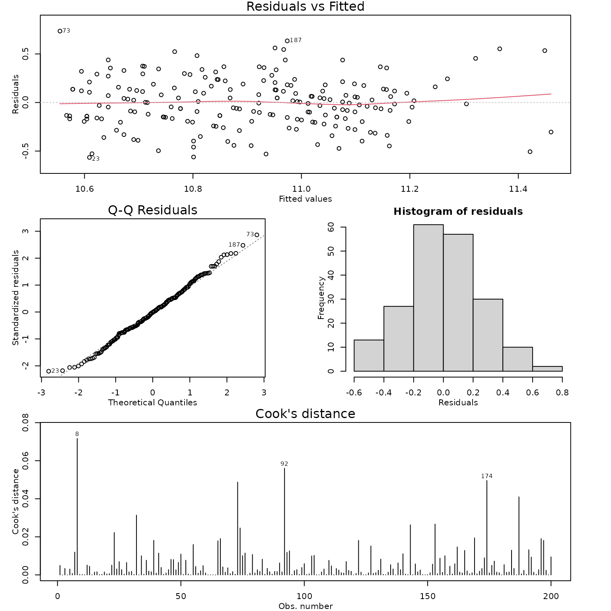

Case Study 10.3: STATS 201/8 Extra Case Study - Multiple Regression Model
Source:vignettes/articles/CS10_3.Rmd
CS10_3.Rmdtitle: ‘Case Study 15.1: Haddock retention in a trawl’ output: html_document vignette: > % % % —
Question 1
A leading car distributor invited visitors to its website to complete a survey to learn about how much they were willing to spend on a new car. It was of interest to see how this depended on the participant’s annual income, marital status, dependents, gender and age.
The resulting data are in the file Carspend.csv, which contains the variables:
| Variable | Description |
|---|---|
| logMaxSpend | The natural log of the maximum participant will spend on a new car ($). |
| logIncome | The natural log of the participants annual income ($). |
| Partner | Yes if the participant had a partner, No if they did not. |
| Dependents | Yes if the participant had financial dependents, No if they had none. |
| Sex | M if the participant was Male or F if they were female. (Nobody that participated in the survey selected any other option.) |
| Age | The age of the participant (in years). |
Notes: It is better to work with both MaxSpend and Income logged. We have already logged these in the dataset so you do not need to do this. You do not need to comment on the need to log these in the Method and Assumptions section.
Instructions:
- Comment on the pairs plot of the data.
- Fit an appropriate linear model as follows: fit a linear regression model to the response variable logMaxSpend containing the five explanatory terms logIncome, Partner, Dependents, Sex, Age. (Do not include any interaction terms.) Then simplify the model by successively removing the least significant term until all are significant at the 5% level. Generate the inference output you need from the final model.
- Write a Method and Assumption Checks section.
- Write sentences as if for an Executive Summary to answer
the following:
- Estimate the change in MaxSpend when income is increased by 50%.
- Estimate the change in MaxSpend between males and females.
Question of interest/goal of the study
It was of interest to see how maximum spend on a new car depended on annual income, partnership status, dependents, gender and age.
inspect the data:
CarSpend.df = read.csv("CarSpend.csv", header = TRUE, stringsAsFactors = TRUE)
pairs20x(CarSpend.df)
Comment on plot
There is a moderate increasing relationship between LogIncome and LogMaxSpend. Males tend to spend more than females. People without partners or dependents tend to spend more, but this difference isn’t as great as the gender difference. There is also a weaker increasing relationship between age and logMaxSpend, but there is a hit of curve in this, with the relationship starting fairly flat. Age and LogIncome have the greatest correlation between the explanatory variables (0.42).
Fit an appropriate linear model and Check Assumptions
car.fit1 = lm(LogMaxSpend ~ LogIncome + Partner + Dependents + Sex + Age, data = CarSpend.df)
modelcheck(car.fit1)
summary(car.fit1)##
## Call:
## lm(formula = LogMaxSpend ~ LogIncome + Partner + Dependents +
## Sex + Age, data = CarSpend.df)
##
## Residuals:
## Min 1Q Median 3Q Max
## -0.60567 -0.16550 -0.01957 0.16995 0.74099
##
## Coefficients:
## Estimate Std. Error t value Pr(>|t|)
## (Intercept) 8.7710889 0.3750150 23.389 < 2e-16 ***
## LogIncome 0.1860703 0.0358246 5.194 5.18e-07 ***
## PartnerYes -0.0950260 0.0395258 -2.404 0.0172 *
## DependentsYes -0.0694440 0.0410605 -1.691 0.0924 .
## SexM 0.2889717 0.0383235 7.540 1.76e-12 ***
## Age 0.0005588 0.0020055 0.279 0.7808
## ---
## Signif. codes: 0 '***' 0.001 '**' 0.01 '*' 0.05 '.' 0.1 ' ' 1
##
## Residual standard error: 0.2588 on 194 degrees of freedom
## Multiple R-squared: 0.3852, Adjusted R-squared: 0.3694
## F-statistic: 24.31 on 5 and 194 DF, p-value: < 2.2e-16
car.fit2 = lm(LogMaxSpend ~ LogIncome + Partner + Dependents + Sex, data = CarSpend.df)
summary(car.fit2)##
## Call:
## lm(formula = LogMaxSpend ~ LogIncome + Partner + Dependents +
## Sex, data = CarSpend.df)
##
## Residuals:
## Min 1Q Median 3Q Max
## -0.59785 -0.16778 -0.02272 0.16744 0.74230
##
## Coefficients:
## Estimate Std. Error t value Pr(>|t|)
## (Intercept) 8.74549 0.36272 24.111 < 2e-16 ***
## LogIncome 0.19018 0.03258 5.838 2.18e-08 ***
## PartnerYes -0.09377 0.03917 -2.394 0.0176 *
## DependentsYes -0.07098 0.04059 -1.749 0.0819 .
## SexM 0.29020 0.03798 7.642 9.47e-13 ***
## ---
## Signif. codes: 0 '***' 0.001 '**' 0.01 '*' 0.05 '.' 0.1 ' ' 1
##
## Residual standard error: 0.2582 on 195 degrees of freedom
## Multiple R-squared: 0.385, Adjusted R-squared: 0.3724
## F-statistic: 30.52 on 4 and 195 DF, p-value: < 2.2e-16
car.fit3 = lm(LogMaxSpend ~ LogIncome + Partner + Sex, data = CarSpend.df)
modelcheck(car.fit3)
summary(car.fit3)##
## Call:
## lm(formula = LogMaxSpend ~ LogIncome + Partner + Sex, data = CarSpend.df)
##
## Residuals:
## Min 1Q Median 3Q Max
## -0.56586 -0.16645 -0.00379 0.16268 0.73504
##
## Coefficients:
## Estimate Std. Error t value Pr(>|t|)
## (Intercept) 8.66153 0.36141 23.966 < 2e-16 ***
## LogIncome 0.19447 0.03265 5.955 1.18e-08 ***
## PartnerYes -0.11797 0.03684 -3.202 0.00159 **
## SexM 0.30760 0.03684 8.349 1.23e-14 ***
## ---
## Signif. codes: 0 '***' 0.001 '**' 0.01 '*' 0.05 '.' 0.1 ' ' 1
##
## Residual standard error: 0.2596 on 196 degrees of freedom
## Multiple R-squared: 0.3754, Adjusted R-squared: 0.3658
## F-statistic: 39.26 on 3 and 196 DF, p-value: < 2.2e-16
confint(car.fit3)## 2.5 % 97.5 %
## (Intercept) 7.9487739 9.37429562
## LogIncome 0.1300713 0.25887177
## PartnerYes -0.1906225 -0.04532111
## SexM 0.2349375 0.38025876
1.5^confint(car.fit3)[2, ]## 2.5 % 97.5 %
## 1.054155 1.110670
100 * (1.5^confint(car.fit3)[2, ] - 1)## 2.5 % 97.5 %
## 5.415487 11.067004## 2.5 % 97.5 %
## 1.264830 1.462663## 2.5 % 97.5 %
## 26.48297 46.26630Methods and assumption checks
We have applied a multiple regression linear model to the logMaxSpend response variable, with explanatory variables logIncome, Sex, Age, Partner and Dependents. Age had the highest p-value (0.78) and the model was refitted with age removed. Dependents was then removed (p-value of 0.08) and the model refitted once more. All remaining terms were highly significant.
The residual plot showed approximately constant variability and no trend. Normality looks good and no influential points were detected. Model assumptions are satisfied.
Our model is:
where and if male (else = 0 if female), and if in a partnership (else = 0 if not).
Our model explained 37.5% of the variability in the logged survival times.
Write sentences as if for an Executive Summary to answer the following:
Question 2
This question revisits the data from question 1.
Fit a linear regression model containing only the Age explanatory variable to explain LogMaxSpend.
What does this model reveal about the relationship between Age and logMaxSpend.
You will have (hopefully) reached a different conclusion regarding the effect of age in (b) above than in the executive summary from question 1. Provide an explanation of why this happened.
Fit a linear regression model containing only the Age explanatory variable to explain LogMaxSpend.
##
## Call:
## lm(formula = LogMaxSpend ~ Age, data = CarSpend.df)
##
## Residuals:
## Min 1Q Median 3Q Max
## -0.7671 -0.2021 0.0036 0.2153 0.9032
##
## Coefficients:
## Estimate Std. Error t value Pr(>|t|)
## (Intercept) 10.640666 0.082173 129.491 < 2e-16 ***
## Age 0.007317 0.002180 3.357 0.000945 ***
## ---
## Signif. codes: 0 '***' 0.001 '**' 0.01 '*' 0.05 '.' 0.1 ' ' 1
##
## Residual standard error: 0.3178 on 198 degrees of freedom
## Multiple R-squared: 0.05384, Adjusted R-squared: 0.04907
## F-statistic: 11.27 on 1 and 198 DF, p-value: 0.0009454What does this model reveal about the relationship between Age and logMaxSpend.
There is strong evidence of a positive association between age and logmaxspend.
You will have (hopefully) reached a different conclusion regarding the effect of age above than in question 1. Provide an explanation of why this happened.
As age increases, so does income, and as income increases so does spend amount. Hence there is an indirect association between age and spend. However, once income is taken into account in explaining spend amount there is no longer an effect of age. In other words, any effect that age has on spend amount is already explained by using income as an explanatory variable.